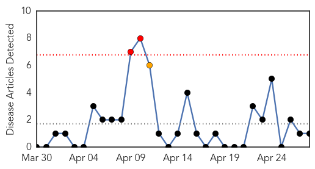
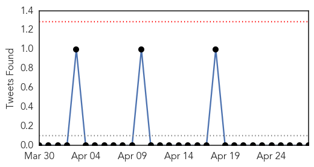
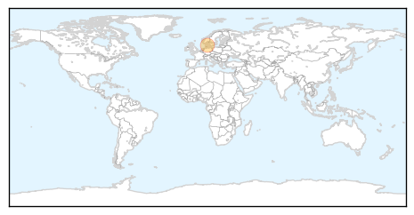
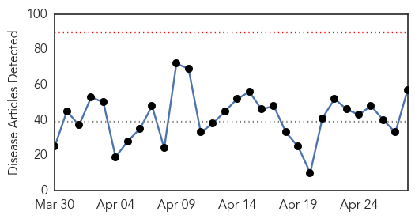
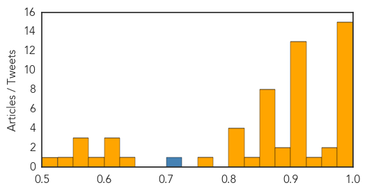

Swine Flu
30-Day Web Trend
2 alerts, 1 warnings

30-Day Twitter Trend
0 alerts, 0 warnings

Article Locations
Article Confidences

Top Articles:
Top Tweets:
-
No tweets found for Apr 28, 2014
Unknown
30-Day Web Trend
0 alerts, 0 warnings

30-Day Twitter Trend
5 alerts, 0 warnings

Article Locations
Article Confidences
Top Articles:
- 1.000
- The MERS Situation in Saudi Arabia Is Deteriorating By the Hour
- 0.999
- Egypt discovers first case of MERS virus
- 0.999
- First MERS Virus Case Reported In Egypt; Health Officials 'Concerned'
- 0.998
- Scientists find MERS virus antibodies that may lead to treatments
- 0.998
- Saudi Arabia says MERS virus cases top 300, 5 more die
- 0.996
- MERS toll reaches 102 in Saudi Arabia
- 0.996
- MERS toll reaches 102 in Saudi Arabia
- 0.995
- Saudi Death Toll from MERS Virus Climbs to 102
- 0.994
- Saudi Death Toll from MERS Virus Climbs to 102
- 0.988
- MERS virus spreads in Saudi Arabia; 10 people dead
- 0.987
- US experts declare progress in search for MERS treatment
- 0.983
- NationalJournal
- 0.979
- Saudi Arabia MERS cases spiral to 339 infected, 10 dead; Egypt marks first
- 0.978
- Egypt reports first case of dangerous respiratory virus; Saudi reports 5 more deaths
- 0.976
- MERS Virus: 26 New Cases, 10 Deaths in Saudi Arabia
- 0.973
- Fears grow as disease kills 10 more
- 0.972
- Saudi Arabia has 26 more cases of MERS virus, 10 dead
- 0.935
- 5 Million Pigs Die Yet Public Only Concerned About Increased Bacon Prices
- 0.917
- Haj pilgrims hit by lethal camel flu
- 0.917
- Chicago Tribune
- 0.917
- Chicago Tribune
- 0.917
- Chicago Tribune
- 0.917
- Chicago Tribune
- 0.917
- Chicago Tribune
- 0.917
- Chicago Tribune
- 0.917
- Chicago Tribune
- 0.917
- Chicago Tribune
- 0.910
- The world windows to Thailand
- 0.910
- The world windows to Thailand
- 0.906
- Local case of diphtheria confirmed
- 0.901
- World Health Organization holds emergency meeting on cross-border spread of polio
- 0.891
- Killer virus wipes out more than 10 percent of US pig population
- 0.883
- KRNV, Reno, NV
- 0.873
- South West parents warned of meningococcal danger
- 0.866
- People walk by storm damage to houses along Green Street after a tornado went through Tupelo Mississippi
- 0.866
- Students demonstrators take cover from tear gas during a protest supporting an agriculture nation wide strike in Bogota
- 0.866
- A student demonstrator throws a tear gas canister away during a protest supporting an agriculture nation wide strike in Bogota
- 0.866
- Russian envoy says OSCE was "irresponsible" in sending monitors to Ukraine
- 0.866
- Egyptian court bans group that helped topple Mubarak
- 0.866
- Mayor of Ukrainian city shot and wounded
- 0.866
- Separatists seize town police HQ in east Ukraine
- 0.832
- Stave off summer diseases: doctors
- 0.821
- Pork Virus Has Killed 10 Percent Of Hog Population In America
- 0.819
- Scabies scare: 30 Halifax nurses diagnosed with skin infection
- 0.818
- Legionnaires outbreak at local senior living facility
- 0.802
- Indonesia handing out mosquito nets in Papua to combat malaria
- 0.759
- Malaria cases in Mozambique top 3m
- 0.639
- Salmonella outbreak hits UQ college
- 0.619
- ATWOLI: It’s not too late to redeem health services - Opinion
- 0.614
- Annual Conference on Lyme Disease, Other Tick-Borne Illnesses to be Held this Weekend
Showing top 50 articles...
Top Tweets:
- 0.795
- Jornada de Hemodinamia se realizó en el Hospital de Clínicas: El Dpto. de Cardiología Pediátrica del Hospital ... http://t.co/y7g81vtqLx
- 0.717
- RT: Infection prevention and control of epidemic-and pandemic prone acute respiratory infections in health care http://t.c…
- 0.546
- awwnnnnnnn üòç soy afortunada... No cualquiera tiene el coraje de querermeüòö